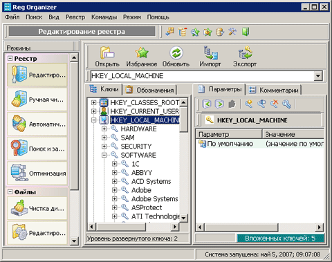

Reg Organize
Профилактические работы с реестром Windows не менее важны, чем регулярная проверка здоровья жесткого диска и защита системы от вредоносных вирусов. Наверняка любой пользователь после длительного периода работы компьютера замечал, что со временем скорость реакции системы на его действия заметно уменьшается. Это происходит потому, что в реестре скапливается много ненужной информации. Избавиться от мусора системного реестра и призвана программа Reg Organizer компании ChemTable Software.
